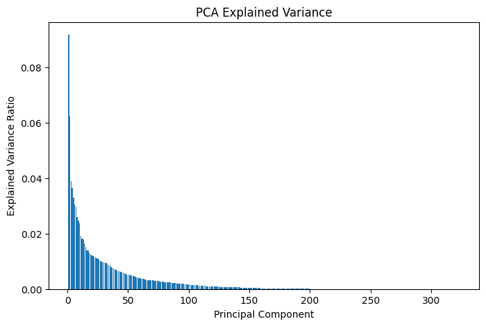

# --- Data Exploration and Viz --- #
import pandas as pd
import matplotlib.pyplot as plt
import seaborn as sns
from resources.customviz import \
plot_components, \
expl_var
# --- Data Preprocessing --- #
import numpy as np
# --- Pipelines --- #
from resources.prep import build_prep_cluster
from sklearn.cluster import KMeans, DBSCAN, AgglomerativeClustering
# --- Model Loading --- #
import pickleData Masters Case: Agrupamentos Naturais
Felipe Viacava – São Paulo, ago/2023
O presente documento consiste no desenvolvimento de modelos de agrupamento como parte da solução do Case “Data Masters - Cientista de Dados” do Santander Brasil.
O objetivo é identificar e avaliar agrupamentos naturais (clusters), e atribuílos a um rank baseado no lucro esperado por cliente.
Na etapa de classificação, buscava-se maximizar o lucro total que um modelo preditivo poderia gerar ao banco numa campanha de retenção. Agrupamentos naturais, por outro lado, são criados de forma não supervisionada, de modo que não podemos utilizar falsos positivos e verdadeiros positivos encontrados nos modelos para avaliá-los, uma vez que não existe uma variável “TARGET” para determinar estas métricas.
Premissas adotadas nesta etapa: - Adota-se o lucro esperado por cliente calculado na etapa anterior; - Novo pipeline de preprocessamento pois, em geral, modelos de agrupamento são sensíveis à distribuições quando tratamos de variáveis numéricas; - Os clusters são encontrados usando todos os dados, mas o lucro per capita só é avaliado sobre a base de testes.
Bibliotecas
Lucro estimado
Uma das vantagens de trabalhar com classes para criar modelos robustos é a portabilidade. Não apenas para fins de deployment, mas também para agilidade em seu uso para diferentes aplicações. Aqui, lemos o conjunto de testes e carregamos o modelo campeão previamente treinado para recriar a coluna de lucro esperado por cliente.
with open("models/hgb.pkl", "rb") as f:
hgb = pickle.load(f)test = pd \
.read_csv('data/test.csv') \
.assign(
predicted = (
lambda ldf:
hgb.predict(ldf.drop("TARGET", axis=1))
),
profit = (
lambda ldf:
((ldf["TARGET"] * 100) - 10) * ldf["predicted"]
),
origin = "test"
)
train = pd \
.read_csv('data/train.csv') \
.assign(
predicted = np.nan,
profit = np.nan,
origin = "train"
)
df = pd.concat([train, test])
df| ID | var3 | var15 | imp_ent_var16_ult1 | imp_op_var39_comer_ult1 | imp_op_var39_comer_ult3 | imp_op_var40_comer_ult1 | imp_op_var40_comer_ult3 | imp_op_var40_efect_ult1 | imp_op_var40_efect_ult3 | ... | saldo_medio_var33_ult3 | saldo_medio_var44_hace2 | saldo_medio_var44_hace3 | saldo_medio_var44_ult1 | saldo_medio_var44_ult3 | var38 | TARGET | predicted | profit | origin | |
|---|---|---|---|---|---|---|---|---|---|---|---|---|---|---|---|---|---|---|---|---|---|
| 0 | 111813 | 2 | 22 | 0.0 | 0.0 | 0.0 | 0.0 | 0.0 | 0.0 | 0.0 | ... | 0.0 | 0.0 | 0.0 | 0.0 | 0.0 | 117310.979016 | 0 | NaN | NaN | train |
| 1 | 31053 | 2 | 79 | 105.0 | 0.0 | 0.0 | 0.0 | 0.0 | 0.0 | 0.0 | ... | 0.0 | 0.0 | 0.0 | 0.0 | 0.0 | 68480.010000 | 0 | NaN | NaN | train |
| 2 | 136647 | 2 | 29 | 0.0 | 0.0 | 0.0 | 0.0 | 0.0 | 0.0 | 0.0 | ... | 0.0 | 0.0 | 0.0 | 0.0 | 0.0 | 57517.740000 | 0 | NaN | NaN | train |
| 3 | 100343 | 2 | 29 | 0.0 | 0.0 | 0.0 | 0.0 | 0.0 | 0.0 | 0.0 | ... | 0.0 | 0.0 | 0.0 | 0.0 | 0.0 | 60060.930000 | 0 | NaN | NaN | train |
| 4 | 9720 | 2 | 25 | 0.0 | 0.0 | 0.0 | 0.0 | 0.0 | 0.0 | 0.0 | ... | 0.0 | 0.0 | 0.0 | 0.0 | 0.0 | 84028.740000 | 0 | NaN | NaN | train |
| ... | ... | ... | ... | ... | ... | ... | ... | ... | ... | ... | ... | ... | ... | ... | ... | ... | ... | ... | ... | ... | ... |
| 15199 | 145076 | 2 | 23 | 0.0 | 0.0 | 0.0 | 0.0 | 0.0 | 0.0 | 0.0 | ... | 0.0 | 0.0 | 0.0 | 0.0 | 0.0 | 55667.400000 | 0 | 0.0 | 0.0 | test |
| 15200 | 8976 | 2 | 35 | 0.0 | 0.0 | 0.0 | 0.0 | 0.0 | 0.0 | 0.0 | ... | 0.0 | 0.0 | 0.0 | 0.0 | 0.0 | 117310.979016 | 0 | 0.0 | 0.0 | test |
| 15201 | 123578 | 2 | 25 | 0.0 | 0.0 | 0.0 | 0.0 | 0.0 | 0.0 | 0.0 | ... | 0.0 | 0.0 | 0.0 | 0.0 | 0.0 | 72733.590000 | 0 | 0.0 | 0.0 | test |
| 15202 | 119823 | 2 | 24 | 0.0 | 0.0 | 0.0 | 0.0 | 0.0 | 0.0 | 0.0 | ... | 0.0 | 0.0 | 0.0 | 0.0 | 0.0 | 115950.060000 | 0 | 0.0 | 0.0 | test |
| 15203 | 122835 | 2 | 28 | 0.0 | 0.0 | 0.0 | 0.0 | 0.0 | 0.0 | 0.0 | ... | 0.0 | 0.0 | 0.0 | 0.0 | 0.0 | 47610.720000 | 0 | 0.0 | 0.0 | test |
76020 rows × 374 columns
reference = df[["ID", "TARGET", "predicted", "profit", "origin"]]
reference| ID | TARGET | predicted | profit | origin | |
|---|---|---|---|---|---|
| 0 | 111813 | 0 | NaN | NaN | train |
| 1 | 31053 | 0 | NaN | NaN | train |
| 2 | 136647 | 0 | NaN | NaN | train |
| 3 | 100343 | 0 | NaN | NaN | train |
| 4 | 9720 | 0 | NaN | NaN | train |
| ... | ... | ... | ... | ... | ... |
| 15199 | 145076 | 0 | 0.0 | 0.0 | test |
| 15200 | 8976 | 0 | 0.0 | 0.0 | test |
| 15201 | 123578 | 0 | 0.0 | 0.0 | test |
| 15202 | 119823 | 0 | 0.0 | 0.0 | test |
| 15203 | 122835 | 0 | 0.0 | 0.0 | test |
76020 rows × 5 columns
Processamento
Os passos de pré-processamento dos dados utilizados no modelo campeão serão reutilizados aqui, com exceção dos encoders ordinais. Na classificação, foram usados enconders ordinais para evitar o aumento de dimensionalidade, reduzindo o número de variáveis aleatórias necessárias por split nas árvores, uma vez que lidam bem com relações não lineares entre variáveis independentes e a variável target. No caso da análise de clusters, foi escolhido o One Hot Encoding para as features categóricas, além de outras manipulações para as variáveis numéricas.
cdf = df.drop(["TARGET","predicted","profit","origin"],axis=1)
prep = build_prep_cluster().fit(cdf)
prepPipeline(steps=[('base',
Pipeline(steps=[('DropConstantColumns',
DropConstantColumns(also=['ID'])),
('DropDuplicateColumns',
DropDuplicateColumns()),
('NoneZeroCountSaldo',
AddNonZeroCount(prefix='saldo')),
('SumSaldo', CustomSum(prefix='saldo')),
('NoneZeroCountImp',
AddNonZeroCount(prefix='imp')),
('SumImp', CustomSum(prefix='imp')),
('ImputeNanDelta',
CustomI...
scaler=StandardScaler())),
('zh_ss',
PrefixScaler(prefixes=['non_zero_count_saldo', 'sum_of_imp'],
scaler=StandardScaler(), zero_heavy=True)),
('cat',
ColumnTransformer(remainder='passthrough',
transformers=[('ohe',
Pipeline(steps=[('ohe',
OneHotEncoder(min_frequency=100,
sparse_output=False)),
('ss',
StandardScaler())]),
['var36', 'var21'])])),
('knn', KNNImputer()), ('pca', PCA())])In a Jupyter environment, please rerun this cell to show the HTML representation or trust the notebook. On GitHub, the HTML representation is unable to render, please try loading this page with nbviewer.org.
Pipeline(steps=[('base',
Pipeline(steps=[('DropConstantColumns',
DropConstantColumns(also=['ID'])),
('DropDuplicateColumns',
DropDuplicateColumns()),
('NoneZeroCountSaldo',
AddNonZeroCount(prefix='saldo')),
('SumSaldo', CustomSum(prefix='saldo')),
('NoneZeroCountImp',
AddNonZeroCount(prefix='imp')),
('SumImp', CustomSum(prefix='imp')),
('ImputeNanDelta',
CustomI...
scaler=StandardScaler())),
('zh_ss',
PrefixScaler(prefixes=['non_zero_count_saldo', 'sum_of_imp'],
scaler=StandardScaler(), zero_heavy=True)),
('cat',
ColumnTransformer(remainder='passthrough',
transformers=[('ohe',
Pipeline(steps=[('ohe',
OneHotEncoder(min_frequency=100,
sparse_output=False)),
('ss',
StandardScaler())]),
['var36', 'var21'])])),
('knn', KNNImputer()), ('pca', PCA())])Pipeline(steps=[('DropConstantColumns', DropConstantColumns(also=['ID'])),
('DropDuplicateColumns', DropDuplicateColumns()),
('NoneZeroCountSaldo', AddNonZeroCount(prefix='saldo')),
('SumSaldo', CustomSum(prefix='saldo')),
('NoneZeroCountImp', AddNonZeroCount(prefix='imp')),
('SumImp', CustomSum(prefix='imp')),
('ImputeNanDelta',
CustomImputer(prefix='delta', to...99999)),
('NoneCountDelta', AddNoneCount(prefix='delta')),
('NonZeroCountDelta', AddNonZeroCount(prefix='delta')),
('SumDelta', CustomSum(prefix='delta')),
('NonZeroContInd', AddNonZeroCount(prefix='ind')),
('NonZeroCountNum', AddNonZeroCount(prefix='num')),
('SumNum', CustomSum(prefix='num')),
('ImputeNanVar3',
CustomImputer(prefix='var3', to_replace=-999999))])DropConstantColumns(also=['ID'])
DropDuplicateColumns()
AddNonZeroCount(prefix='saldo')
CustomSum(prefix='saldo')
AddNonZeroCount(prefix='imp')
CustomSum(prefix='imp')
CustomImputer(prefix='delta', to_replace=9999999999)
AddNoneCount(prefix='delta')
AddNonZeroCount(prefix='delta')
CustomSum(prefix='delta')
AddNonZeroCount(prefix='ind')
AddNonZeroCount(prefix='num')
CustomSum(prefix='num')
CustomImputer(prefix='var3', to_replace=-999999)
PrefixScaler(prefixes=['saldo', 'imp', 'delta', 'non_zero_count_ind', 'num'],
scaler=RobustScaler())RobustScaler()
RobustScaler()
PrefixScaler(prefixes=['saldo', 'imp', 'delta', 'non_zero_count_ind', 'num',
'sum_of_saldo', 'non_zero_count_imp', 'none_count_delta',
'non_zero_count_delta', 'sum_of_delta', 'ind',
'non_zero_count_num', 'sum_of_num', 'var3', 'var15',
'var38'],
scaler=StandardScaler())StandardScaler()
StandardScaler()
PrefixScaler(prefixes=['non_zero_count_saldo', 'sum_of_imp'],
scaler=StandardScaler(), zero_heavy=True)StandardScaler()
StandardScaler()
ColumnTransformer(remainder='passthrough',
transformers=[('ohe',
Pipeline(steps=[('ohe',
OneHotEncoder(min_frequency=100,
sparse_output=False)),
('ss', StandardScaler())]),
['var36', 'var21'])])['var36', 'var21']
OneHotEncoder(min_frequency=100, sparse_output=False)
StandardScaler()
['var3', 'var15', 'imp_ent_var16_ult1', 'imp_op_var39_comer_ult1', 'imp_op_var39_comer_ult3', 'imp_op_var40_comer_ult1', 'imp_op_var40_comer_ult3', 'imp_op_var40_efect_ult1', 'imp_op_var40_efect_ult3', 'imp_op_var40_ult1', 'imp_op_var41_comer_ult1', 'imp_op_var41_comer_ult3', 'imp_op_var41_efect_ult1', 'imp_op_var41_efect_ult3', 'imp_op_var41_ult1', 'imp_op_var39_efect_ult1', 'imp_op_var39_efect_ult3', 'imp_op_var39_ult1', 'imp_sal_var16_ult1', 'ind_var1_0', 'ind_var1', 'ind_var5_0', 'ind_var5', 'ind_var8_0', 'ind_var8', 'ind_var12_0', 'ind_var12', 'ind_var13_0', 'ind_var13_corto_0', 'ind_var13_corto', 'ind_var13_largo_0', 'ind_var13_largo', 'ind_var13_medio', 'ind_var13', 'ind_var14_0', 'ind_var14', 'ind_var17_0', 'ind_var17', 'ind_var18', 'ind_var19', 'ind_var20_0', 'ind_var20', 'ind_var24_0', 'ind_var24', 'ind_var25_cte', 'ind_var26_cte', 'ind_var26', 'ind_var25', 'ind_var29_0', 'ind_var29', 'ind_var30_0', 'ind_var30', 'ind_var31_0', 'ind_var31', 'ind_var32_cte', 'ind_var32', 'ind_var33_0', 'ind_var33', 'ind_var34', 'ind_var37_cte', 'ind_var37', 'ind_var39_0', 'ind_var40_0', 'ind_var41_0', 'ind_var39', 'ind_var44_0', 'ind_var44', 'num_var1_0', 'num_var1', 'num_var4', 'num_var5_0', 'num_var5', 'num_var8_0', 'num_var8', 'num_var12_0', 'num_var12', 'num_var13_0', 'num_var13_corto_0', 'num_var13_corto', 'num_var13_largo_0', 'num_var13_largo', 'num_var13_medio', 'num_var13', 'num_var14_0', 'num_var14', 'num_var17_0', 'num_var17', 'num_var18', 'num_var20_0', 'num_var20', 'num_var24_0', 'num_var24', 'num_var26', 'num_var25', 'num_op_var40_hace2', 'num_op_var40_hace3', 'num_op_var40_ult1', 'num_op_var40_ult3', 'num_op_var41_hace2', 'num_op_var41_hace3', 'num_op_var41_ult1', 'num_op_var41_ult3', 'num_op_var39_hace2', 'num_op_var39_hace3', 'num_op_var39_ult1', 'num_op_var39_ult3', 'num_var29_0', 'num_var29', 'num_var30_0', 'num_var30', 'num_var31_0', 'num_var31', 'num_var32', 'num_var33_0', 'num_var33', 'num_var34', 'num_var35', 'num_var37_med_ult2', 'num_var37', 'num_var39_0', 'num_var40_0', 'num_var41_0', 'num_var39', 'num_var42_0', 'num_var42', 'num_var44_0', 'num_var44', 'saldo_var1', 'saldo_var5', 'saldo_var8', 'saldo_var12', 'saldo_var13_corto', 'saldo_var13_largo', 'saldo_var13', 'saldo_var14', 'saldo_var17', 'saldo_var18', 'saldo_var20', 'saldo_var24', 'saldo_var26', 'saldo_var25', 'saldo_var29', 'saldo_var30', 'saldo_var31', 'saldo_var32', 'saldo_var33', 'saldo_var34', 'saldo_var37', 'saldo_var40', 'saldo_var42', 'saldo_var44', 'delta_imp_amort_var18_1y3', 'delta_imp_amort_var34_1y3', 'delta_imp_aport_var13_1y3', 'delta_imp_aport_var17_1y3', 'delta_imp_aport_var33_1y3', 'delta_imp_compra_var44_1y3', 'delta_imp_reemb_var13_1y3', 'delta_imp_reemb_var17_1y3', 'delta_imp_reemb_var33_1y3', 'delta_imp_trasp_var17_in_1y3', 'delta_imp_trasp_var17_out_1y3', 'delta_imp_trasp_var33_in_1y3', 'delta_imp_trasp_var33_out_1y3', 'delta_imp_venta_var44_1y3', 'delta_num_aport_var13_1y3', 'delta_num_aport_var17_1y3', 'delta_num_aport_var33_1y3', 'delta_num_compra_var44_1y3', 'delta_num_venta_var44_1y3', 'imp_amort_var18_ult1', 'imp_amort_var34_ult1', 'imp_aport_var13_hace3', 'imp_aport_var13_ult1', 'imp_aport_var17_hace3', 'imp_aport_var17_ult1', 'imp_aport_var33_hace3', 'imp_aport_var33_ult1', 'imp_var7_emit_ult1', 'imp_var7_recib_ult1', 'imp_compra_var44_hace3', 'imp_compra_var44_ult1', 'imp_reemb_var13_ult1', 'imp_reemb_var17_hace3', 'imp_reemb_var17_ult1', 'imp_reemb_var33_ult1', 'imp_var43_emit_ult1', 'imp_trans_var37_ult1', 'imp_trasp_var17_in_hace3', 'imp_trasp_var17_in_ult1', 'imp_trasp_var17_out_ult1', 'imp_trasp_var33_in_hace3', 'imp_trasp_var33_in_ult1', 'imp_trasp_var33_out_ult1', 'imp_venta_var44_hace3', 'imp_venta_var44_ult1', 'ind_var7_emit_ult1', 'ind_var7_recib_ult1', 'ind_var10_ult1', 'ind_var10cte_ult1', 'ind_var9_cte_ult1', 'ind_var9_ult1', 'ind_var43_emit_ult1', 'ind_var43_recib_ult1', 'num_aport_var13_hace3', 'num_aport_var13_ult1', 'num_aport_var17_hace3', 'num_aport_var17_ult1', 'num_aport_var33_hace3', 'num_aport_var33_ult1', 'num_var7_emit_ult1', 'num_var7_recib_ult1', 'num_compra_var44_hace3', 'num_compra_var44_ult1', 'num_ent_var16_ult1', 'num_var22_hace2', 'num_var22_hace3', 'num_var22_ult1', 'num_var22_ult3', 'num_med_var22_ult3', 'num_med_var45_ult3', 'num_meses_var5_ult3', 'num_meses_var8_ult3', 'num_meses_var12_ult3', 'num_meses_var13_corto_ult3', 'num_meses_var13_largo_ult3', 'num_meses_var13_medio_ult3', 'num_meses_var17_ult3', 'num_meses_var29_ult3', 'num_meses_var33_ult3', 'num_meses_var39_vig_ult3', 'num_meses_var44_ult3', 'num_op_var39_comer_ult1', 'num_op_var39_comer_ult3', 'num_op_var40_comer_ult1', 'num_op_var40_comer_ult3', 'num_op_var40_efect_ult1', 'num_op_var40_efect_ult3', 'num_op_var41_comer_ult1', 'num_op_var41_comer_ult3', 'num_op_var41_efect_ult1', 'num_op_var41_efect_ult3', 'num_op_var39_efect_ult1', 'num_op_var39_efect_ult3', 'num_reemb_var13_ult1', 'num_reemb_var17_hace3', 'num_reemb_var17_ult1', 'num_reemb_var33_ult1', 'num_sal_var16_ult1', 'num_var43_emit_ult1', 'num_var43_recib_ult1', 'num_trasp_var11_ult1', 'num_trasp_var17_in_hace3', 'num_trasp_var17_in_ult1', 'num_trasp_var17_out_ult1', 'num_trasp_var33_in_hace3', 'num_trasp_var33_in_ult1', 'num_trasp_var33_out_ult1', 'num_venta_var44_hace3', 'num_venta_var44_ult1', 'num_var45_hace2', 'num_var45_hace3', 'num_var45_ult1', 'num_var45_ult3', 'saldo_medio_var5_hace2', 'saldo_medio_var5_hace3', 'saldo_medio_var5_ult1', 'saldo_medio_var5_ult3', 'saldo_medio_var8_hace2', 'saldo_medio_var8_hace3', 'saldo_medio_var8_ult1', 'saldo_medio_var8_ult3', 'saldo_medio_var12_hace2', 'saldo_medio_var12_hace3', 'saldo_medio_var12_ult1', 'saldo_medio_var12_ult3', 'saldo_medio_var13_corto_hace2', 'saldo_medio_var13_corto_hace3', 'saldo_medio_var13_corto_ult1', 'saldo_medio_var13_corto_ult3', 'saldo_medio_var13_largo_hace2', 'saldo_medio_var13_largo_hace3', 'saldo_medio_var13_largo_ult1', 'saldo_medio_var13_largo_ult3', 'saldo_medio_var13_medio_hace2', 'saldo_medio_var13_medio_ult1', 'saldo_medio_var13_medio_ult3', 'saldo_medio_var17_hace2', 'saldo_medio_var17_hace3', 'saldo_medio_var17_ult1', 'saldo_medio_var17_ult3', 'saldo_medio_var29_hace2', 'saldo_medio_var29_hace3', 'saldo_medio_var29_ult1', 'saldo_medio_var29_ult3', 'saldo_medio_var33_hace2', 'saldo_medio_var33_hace3', 'saldo_medio_var33_ult1', 'saldo_medio_var33_ult3', 'saldo_medio_var44_hace2', 'saldo_medio_var44_hace3', 'saldo_medio_var44_ult1', 'saldo_medio_var44_ult3', 'var38', 'non_zero_count_saldo', 'sum_of_saldo', 'non_zero_count_imp', 'sum_of_imp', 'none_count_delta', 'non_zero_count_delta', 'sum_of_delta', 'non_zero_count_ind', 'non_zero_count_num', 'sum_of_num']
passthrough
KNNImputer()
PCA()
expl_var(prep[-1].explained_variance_ratio_)